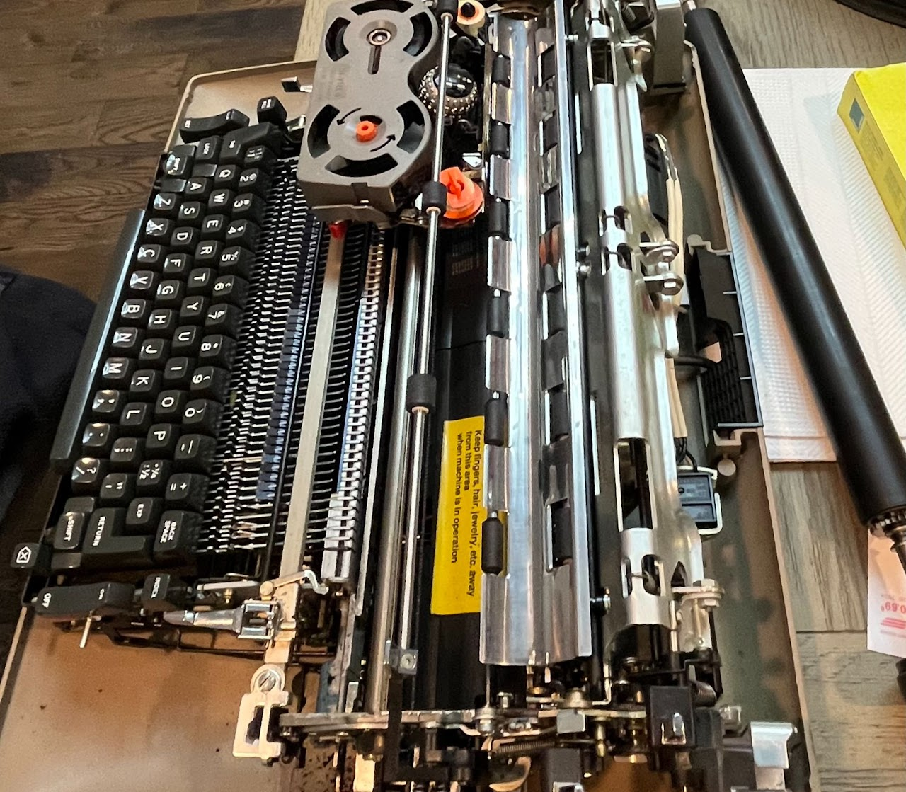
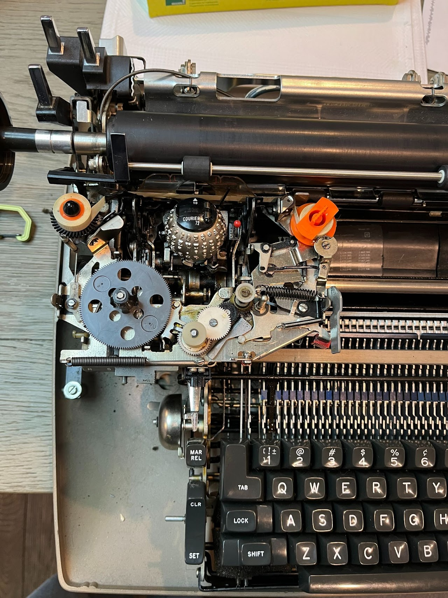

Typewriter Restoration

Intent & Design Constraints
- Wanted to restore a broken, not-working typewriter to its former glory
- Should be:
- A turn-key system when done
- Completely functioning
- Well maintained
The day I got the typewriter
Methods
- Read period-correct repair manuals to understand the machine
- Watched online experts navigate fixes
- Joined online groups to seek help, and offer advice to others
- Just explored the machine and used my robotics knowledge

The ribbon advancing system was non-functional
Video Demonstration
Results
- A system ready to start typing at a moment's notice which works beautifully!